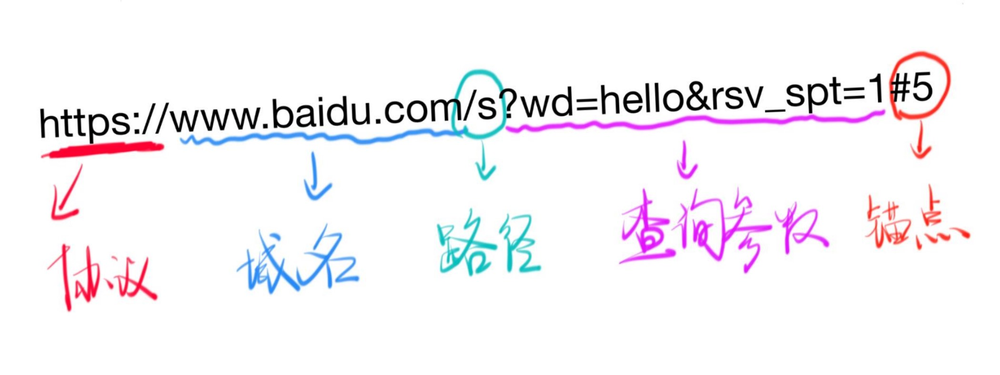
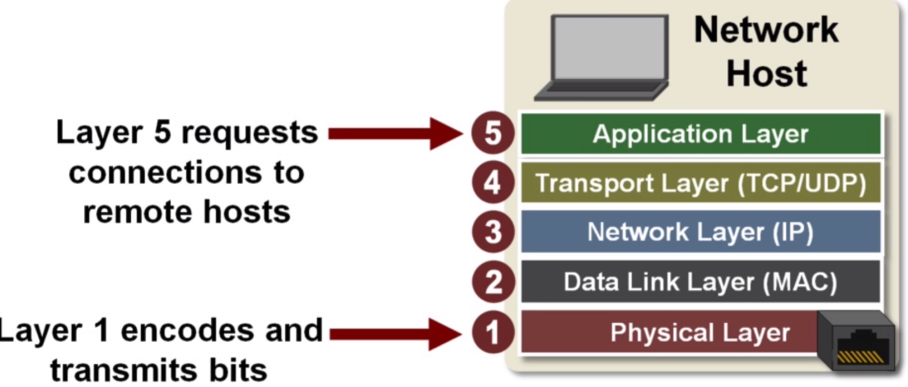

HTTP入门
什么是WWW
WWW是李爵士在1990年左右发明的，他由三部分组成，分别是HTML、URL、HTTP
URL
URL全称统一资源定位符(Uniform Resource Locator),是__WWW__的一个核心概念，它是浏览器用来检索Web上公布的任何资源的机制。

URL由以上几个部分组成，端口默认是不写的，但是要记住HTTP的端口是80，HTTPS的端口是443.
另外需要注意的一点是，锚点#不会被上传到服务器，锚点只是浏览器里面的功能。
HTTP
HTTP全称超文本传输协议，从字面上就可以知道，它是为了传输HTML而生的.HTTP是建立在TCP/IP协议上的。
- TCP/IP协议
五层软件模型，分别是物理层、数据链路层、网络层、传输控制层、应用层。如下图所示

越靠下离物理硬件越近，越靠上离用户就越近。
物理层:通过光电信号，传输数据数据链路层:通过ARP协议获取访问主机的物理地址。网络层:通过子网掩码判断要范围主机的ip是否处于同一子网，如果是同一个子网内，就进行广播,如果不处于同一个子网，就获取下一条的ip，把数据包丢给下一条的ip，这里的下一条ip，可以理解成网关传输控制层:有两个协议，TCP协议和UDP协议，经常被使用的是TCP/协议,因为它是面向连接，可以的传输协议。- 三次握手
1
2
3
4客户端 ----我要建立连接了----> 服务端
客户端 <----好的我知道了---- 服务端
客户端 ----好的我也知道了----> 服务端
完成三次握手后，客户端和服务端 都会为对方开辟一个资源 - 四次分手
1
2
3
4客户端 ----我要断开连接了----> 服务端
客户端 <----好的--- 服务端
客户端 <----我也断开连接了---- 服务端
客户端 ----好的----> 服务端
- 三次握手
应用层:应用层上运行着很多协议，是离客户最近的层，上面运行着HTTP协议、SSH协议、HTTPS协议、FTP协议等等
以上是从下到上说了每一层的功能，现在有个例子，能更好的理解TCP/IP协议，当我们在浏览器输入一个url后，点击回车后发生了什么。
应用层通过DNS服务，得到需要访问rul所对应的IP，告诉下一层传输控制层，我要访问这个IP。数据传输层在本地开了一个随机端口，并且告诉网络层我要进行”三次握手”了，赶紧帮我找到对方主机的位置。网络层拿到对方主机ip，先确定主机的ip是否属于子网内，不属于，就把数据丢给下一跳网关的IP。数据链路层通过ARP协议，确定对方主机的MAC地址，把对方主机的IP地址和MAC地址封装好，丢给物理层物理层通过光信号，把数据传给对方主机。- 对方主机拿到数据，又通过网络层、数据链路层、网络层、把之前封装的数据进行拆解，最后到达
传输控制层，双方传输控制层进行完三次握手后，服务器把客户端请求的东西，发给客户端。 - 传输完成后，通过”四次分手”断开连接。
端口的规则
- 0-1023端口是留给系统用的，已经被占用，如果我们自己要使用，要从1024开始。
- 只有管理员才有权使用留个系统的1024个端口。
- 一个端口被占用，就只能使用另外一个端口，总的端口数有0~65535
关于域名
.com、.org、.cn这些属于顶级域名- baidu.com 、smartisan.com 这些属于二级域名
- www.baidu.com 、 www.smartisan.com 这些三级域名。
- 其实
www是多余的，其实是早期为了让用户知道他们在使用的这个东西是www才加上的。
- HTTP请求
格式：注意:1
2
3
4
5
6请求动词 路径加查询参数 协议名/版本
Host:访问主机的域名或者/IP
Accept:text/html 我接受的接受
Content-type:请求体的格式
回车
请求体- 请求动词有
GET、POST、PUT、PATCH、DELETE等 - 请求体在
GET的时候，一般为空
- 请求动词有
- HTTP响应注意: 常见的状态码是考点。状态码
1
2
3
4协议名/版本 状态码 状态字符串
Content-type：响应体的格式
回车
响应体(下载内容)
（完）
资料参考：
1.饥人谷
2.阮一峰TCP/IP协议